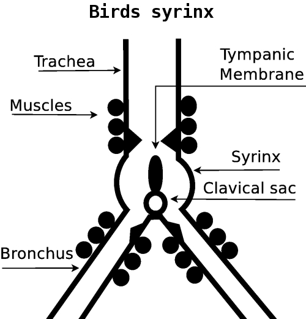
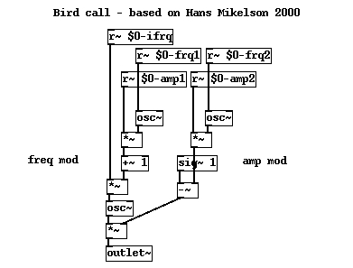
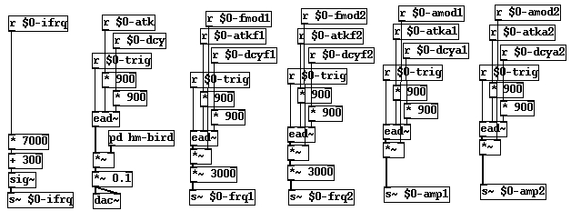
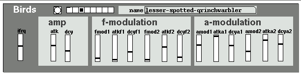
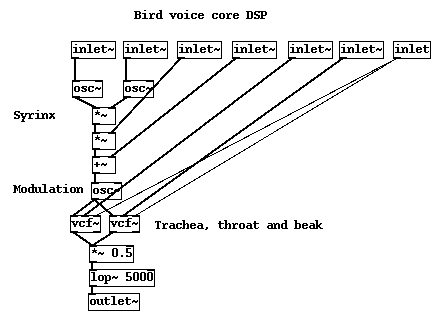
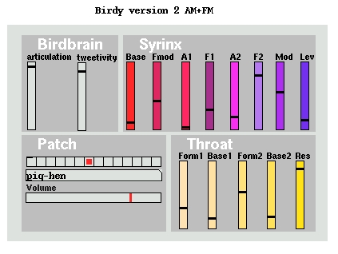

Unlike a human a bird can control the air pressure in each lung and bronchus separately. The voicebox of the bird is exactly at the meeting point of the bronchi and is a small round chamber called the syrinx. That's the bird version of our larynx. We have vocal cords and a tracheal area surrounded by muscles which can change the shape of the vocal tract, but a bird has just a smaller bundle of muscles around the syrinx to tighten and loosen it. Instead of varying the resonant tone most of the birds variance in tone and pitch comes from the control of pressure. Although birds can't "speak" in the same way we do, they do have immensely subtle control over the tones they produce. Who knows what they are saying? Biologists don't have it all worked out yet. Not all birds can sing, some just make quite simple squarks and crys, but those of the class passeriformes have a much better control of their syrinx muscles, and the sub-order oscines (which is a lovely word to describe them and their sound) are what we commonly call songbirds, small and individually territorial. Because not all oscines can sing we know that bird song is also neurological and learned (3) rather than an absolutely physical feature, because jackdaws and crows could theoretically sing but do not. So how does a bird make such a wide range of tones without the sophisticated muscle structure humans have?
The resonant cavity of the syrinx is quite small compared to the whole organ, which consists mostly of three large bunches of muscles at the meeting point of the three tubes. Right at the middle is a tympanic membrame which is a tiny cartilage flap suspended on an air sac (the clavicular sac) so that it can move sideways very fast and freely. This is the bit that governs the sound, it is a fundamental excitor, much like a reed in an oboe. Increasing air pressure and tension of the muscles modulates the pitch, and all birds can do that to some degree, but oscines have two extra features which are lip like constrictions (lateral and medial labia) and extra internal muscles around the bronchial exits and tracheal entrance which they can move very fast to amplitude modulate the sound.
Unlike human speech which is based on resonance more than pitch, the birds song is based on modulation. The throat still acts as an attenuating filter though, albeit mostly fixed. Birds probably stick their heads up into the air as they sing to open and lengthen the tract as much as possible as well as to broadcast the sound.
Birds make very fast sounds and they don't open and close their beaks quickly like we move our lips. For each burst of call the bird opens its beak, makes a bunch of sounds, and then closes it again. The beak may move slightly and certainly has a small contribution to the resonance but it is not really used as a final stage attenuator to gate each sound, therefore birdcall has none of the kind of fricatives or stops we encounter in humans and other mammals.
Yes, the diagram looks naughty, stop sniggering and pay attention at the back! Remember it is a 2D slice, the muscles actually wrap around the whole organ. The central tympanic membrane clearly offers an opportunity for turbulent flow to either air-stream, but although it flexes and contributes to a modulation frequency of the total sound there are other sound sources at the constrictions to the mouths of each pipe. As the syrinx contracts the tympanic membrane is pushed up into the entrance of the trachea to tighten the flow even more so there is a correspondence between pressure, volume of the syringial cavity and the impedence offered into the trachea, which combine to make a kind of tracking filter. The FM occurs because the pitch of the cavity resonance on one side is determined by its volume (smaller volume means a higher frequency), but that volume is determined by the pressure in the other tube as it forces the tympanic membrane over. The amplitude modulation happens as the impedence to the trachea changes, so we expect it to be strongest for the highest pitches.

Here's a quick sketch of what we want. It's based on Hans Mikelsons bird syrinx in Csound, and as he says, it really is fun to play with if you have a cat, and actually it seems to drive other birds mental too.
There are only three oscillators. We control the frequency and amplitude of two oscillators, one of which is added to a constant offset and modulates the frequency of the third oscillator, and one which modulates the amplitude of the third oscillator. Because we use only positive cycles of the AM oscilator we get a positive DC average offset, so a final gain control is added to zero the output for silent or very low frequencies. We could have used a high pass filter for that too, but it's just another way of doing more or less the same thing. A multiply is just a bit cheaper than a [hip~] if we're watching CPU load. Each parameter is picked up by a [receive~] unit, that's a way we can encapsulate the synth and put the interface somewhere else.

In order to control the synthesis DSP we need some time variant functions and a constant. We start with a constant base frequency. There are five things we want to vary, so we give each parameter an envelope generator with attack, decay and level. That expands to 16 parameters including an envelope trigger. Can you spot the synth subpatch hidden amongst all the envelope generators? Notice the multipliers and offsets too. We've normalised the performance parameters, each ranges from zero to one, so now we have extra multiply blocks like [* 900] preceeding the envelope inlets.

I've created an interface to make this patch a bit more understandable and given a few preset examples to listen to. The faders use their send and receive symbols to communicate with the synth and with a little preset collection which are stored as lists and sent to the faders. This makes an interesting interface study. As you will hear there are settings of the controls that produce no sound at all. There is redundancy in the interface. Because each parameter has its own envelope there are some settings where the envelopes are doing contradictory things. In Mikelsons original code both the modulation oscillators were swept in unison for amplitude and frequency. By splitting these into four separate parameters and giving each an amount, attack and decay we get a much bigger range of possible sounds. But some of these will not sound much like birds and some wildly different fader positions may give similar or identical sounds. In the next example we will look at a couple of cheap tricks to reduce our parameter space and the redundancy there.

Here is a slightly different version, I've changed it to frequency modulate the amplitude modulated signal. This was an attempt to approximate richer squarking sounds rather than singing. Pigeons and some larger birds have a much looser coupling of the syrinx to the trachea, a ring of soft tissue allows the entire syrinx to push forwards and backwards against the trachea entrance. This tissue can vibrate like a drum and make some very low and rich tones. To simulate this we want more components to our FM carrier signal before. By moving the connections a little we place the AM part before the FM part. There are now 4 components to the FM modulator signal instead of 2 which makes a big difference to the complexity of the result. Also added is a pair of filters to more correctly simulate a throat and beak. Doing the AM stage first and then the FM makes another AM stage unnecessary, so notice that there is no amplitude modulation of the final signal. Finally we feed through a pair of parallel resonant filters which can also track external modulation signals, this gives us a crude throat and beak and makes it possible to focus in on tones we like and get rid of most the aliased or reflected harmonics we don't want.

Using the above synth core we can build a slightly more sophisticated bird source. Instead of having a separate envelope for each function we start with some low frequency noise and a phasor to create a very slowly moving signal that ramps up as well as down. We use the noise to modulate the frequency of a very slow moving oscillator. The trick is to use both negative and positive parts of the lfo signal because when the frequency for a phasor is negative it ramps backwards, so we can get a signal ramp that alternates in direction and speed. This is somewhat like the gestures we hear in a few birdcalls. Each fader sets the amount of modulation applied to a parameter by this slowly shifting index. Using a cosine function trapped within a -0.25 to 0.25 range that is movable relative to the slow modulator we get amplitude to be loud in the place we like (where the harmonics sound right) and quiet everywhere else. This trick of making the amplitude shift relative to the rest of the spectrum movement is very useful, it's like being able to set the start and end envelopes of multiple parameters at once. It also removes entirely half of the possible parameters that we know are redundant? How do we know that? Because the attack and decay parts of our envelopes in the last patch are symmetrical, one going up, the other coming down. This synthesiser is so simple that it doesn't distinguish between the two, in other words we get the same result approaching from either side and nothing 'sounds backwards'. Instead we now have one common modulator signal that is just ramping up or down at any point in time and derive every parameter as function of that. Although I have only allowed positive functions of the modulator (ranging from one down to zero effect, but never having the opposite effect) it works well because like so many things in nature the parameters are linked and move in parrallel separated only by degree. The only interesting function used in this patch is for the amplitude, all the others just track in a linear way, but they are lagged by a small time of 300ms which means you can morph between birdsounds on the preset radio buttons and get some weird hybrid birds if you are lucky and happen to press the button at a particularly good moment. Here's the finished interface to the birdcall generator and some examples to play. In case you're wondering, all the birds are completely invented, there is no speckle throated spew or tripple tailed tree troubler, as far as I am aware. No doubt you could approximate the call of some real birds and their songs using this apparatus with a bit of care and patience.

Ok, enough avian antics. We've investigated some bird sounds by having a look at the anatomy and turning that into a very crude but effective model. We've implemented a couple of twists and tweaks to explore parameterisation a little. You can subvert the bird syrinx core to get close to a number of other species including monkeys and frogs which is left as a study for the reader. But remember, it may only work for a few special cases, outside of those parameter areas the sound reverts to its true character, that of a bird. Keep basic biology in the forefront of your mind when constructing creatures. It's the correspondence of the model to our internal model of that animal that creates the recognition, not the absolute spectra we hear at any one instant. Think about the mouth, throat and larynx and how they relate to each species, think about the size of the animal and how much energy it can expend and what volume of air it can shift when making sound.